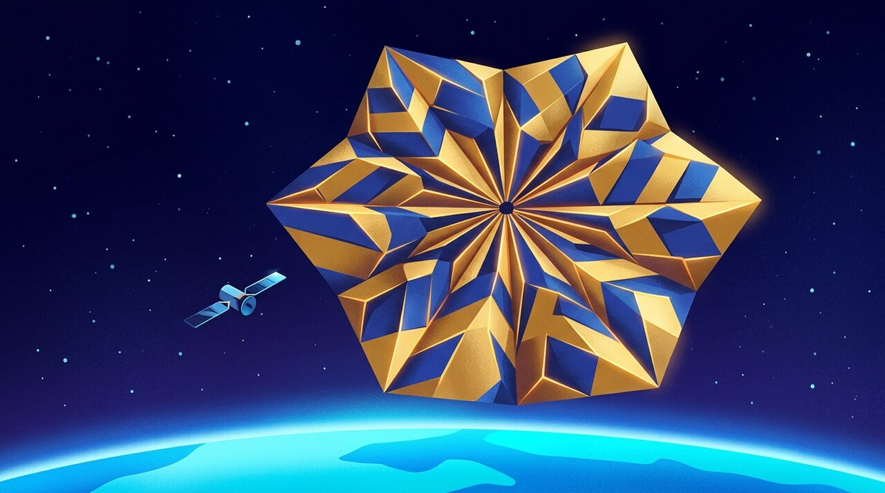
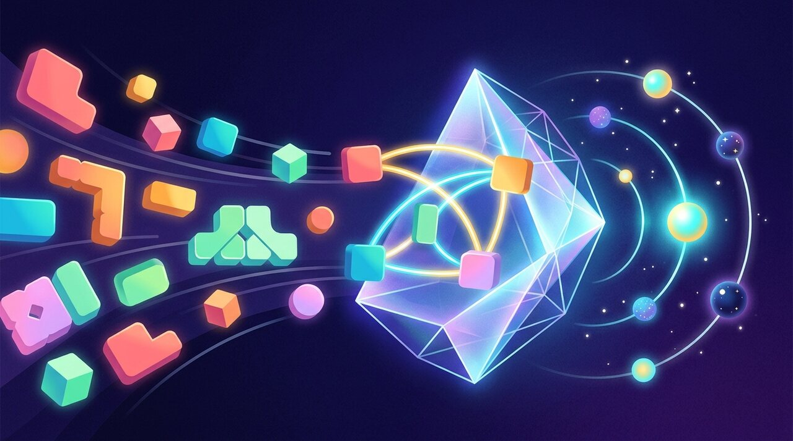
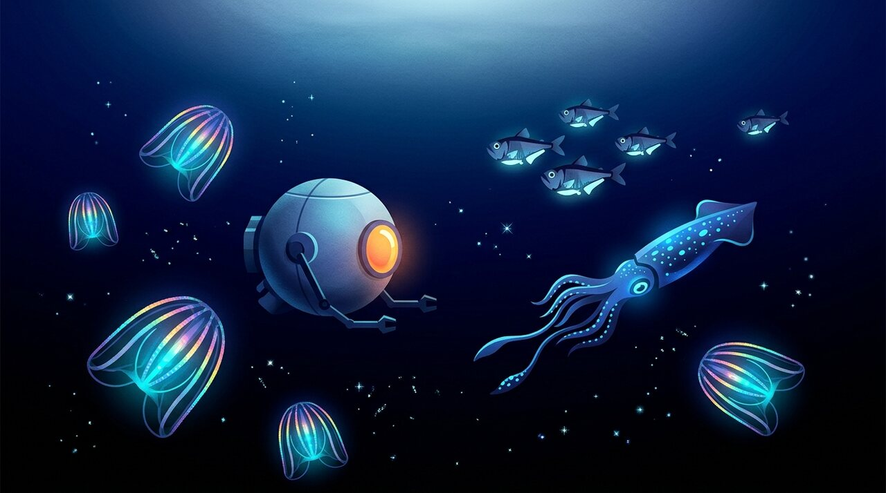
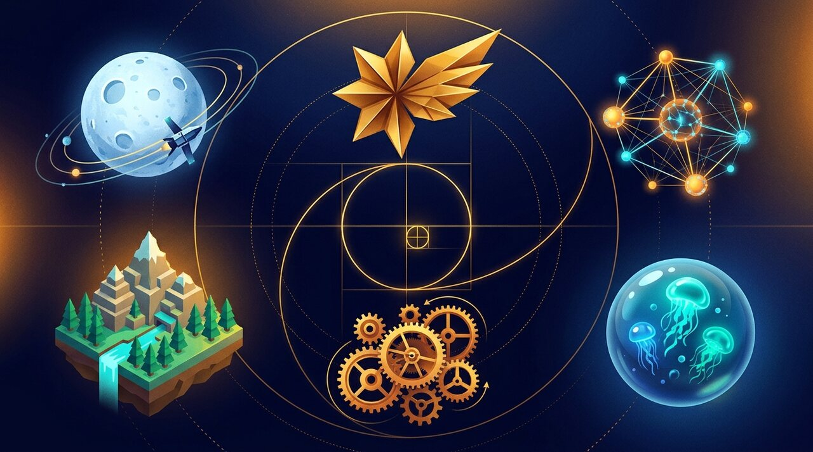

✨ Vol. I · Issue 02 · Explorer Notebook📅 Week of Nov 23 – Nov 29, 2026⏱ 10–15 Min Daily Discovery
🔭
Space · Robotics · AI · Minecraft Systems & Story
The Inquiry Lab
Theme: Simple Rules, Hidden Worlds
🗓 Weekly Stamp Card0 / 7 Days
🛡 5d Chest: +15💎 7d Chest: +20
🎮 Minecraft Timer Active30:00
💡 Tap any highlighted word (or any other English word!) to hear its pronunciation and unlock its Greek/Latin roots.🎓 Scholar = Full Depth · ⚡ Explorer = Quick Read
🚀 Mon · How the World Works · Planetary ScienceScholar ~1200LExplorer ~1010L
· ⏱ 12 min
Peering Through Miles of Ice: Europa Clipper's Ocean Hunt
How a spacecraft with 30.5-meter solar wings will dive past Jupiter's icy moon forty-nine times to test whether a hidden saltwater ocean could support life.
Pace
Voice
I. A Solar Giant Bound for the Outer Dark
Launched on October 14, 2024, NASA's EuropaClipper is a travelerbuiltforpatienceandextremedistance. BecauseJupiterorbitsmorethanfivetimesfartherfromtheSunthanEarthdoes, sunlightouttherecarriesroughlyfourpercent as muchenergy. To powerninescienceinstruments in thatdimtwilight, engineersfittedthespacecraftwithgiantsolarwingsspanning 30.5 meters—aboutthelength of a basketballcourt. Following a sweepinggravity-assisttrajectorypastMarsandEarth, Clipper is scheduled to reachJupiter in April 2030, aiming to answeroneelectrifyingquestion: is theglobaloceansealedbeneathEuropa's frozenshelltrulyhabitable?
🖼 Figure 1A · Ice-Penetrating Orbit
Figure 1A: Following a sweepingtrajectorypastJupiter, EuropaClipperbeamsradarwavesthroughkilometers of fracturedicewhileitsmagnetometerprobesthehabitableoceanbeneath.
II. Outsmarting Jupiter's Fierce Radiation Belts
Settlingdirectlyinto a tightorbitaroundEuropawouldquicklyfry a spacecraft's electronics. Jupiter's colossalmagneticfieldtrapshigh-speedchargedparticles, wrappingEuropainsidepunishingbelts of radiation. Ratherthanlingeringinsidethathazardzone, missiondesignersplotted a cleverloopingorbitaroundJupiteritself. Starting in 2031, EuropaClipperwillswingpastthemoonforty-ninetimes—dipping as close as twenty-fivekilometersaboveitsfracturedsurface—beforezippingbackout to safety to transmitdataandresetitstitanium-shieldedcomputers.
📐 Planetary Physics · How Clipper Maps a Hidden Ocean49 Flybys · 25 km Closest Pass
Figure 1B: By combining ice-penetrating radar echoes with magnetometer readings of salty ocean currents, Clipper tests whether Europa's hidden sea is habitable.
III. Radar Echoes and Invisible Magnetic Whispers
Drillingthrough an icecrustestimatedbetweenthreeandthirtykilometersthick is impossiblefor a singleroboticlandertoday. Instead, Clippercarriestwoingeniousways to lookwithouttouching. First, longantennasmounted on thesolarpanelsbeamradiowavesfrom an ice-penetratingradarcalledREASON. Thosewavespenetratethecoldcrustandbouncebackdifferentlyfromsolidice, trappedpockets of slush, or liquidwaterbelow. Second, a sensitivemagnetometermeasurestinytwists in Jupiter's magneticfieldinduced by Europa's electricallyconductivesaltwaterocean—allowingscientists to mapthedepthandsaltiness of a hiddenseaholdingroughlytwice as muchwater as all of Earth's oceanscombined.
⚡ Explorer Track · Crisp Edition (~1010L)Short on time tonight? Same science, punchier sentences. Tap Scholar anytime for full depth!
I. Giant Solar Wings for a Distant Moon
On October 14, 2024, NASAlaunchedEuropaClippertowardJupiter. Out by Jupiter, sunlight is veryweak, so thespacecraftcarrieshugesolararraysstretching 30.5 metersacross—about as long as a basketballcourt. Afterfollowing a longtrajectorypastMarsandEarth, it willarrive in April 2030 to checkwhetherEuropa's buriedocean is habitable.
🖼 Figure 1A · Ice-Penetrating Orbit
Figure 1A: Following a sweepingtrajectorypastJupiter, EuropaClipperbeamsradarwavesthroughkilometers of fracturedicewhileitsmagnetometerprobesthehabitableoceanbeneath.
II. Ducking In and Out of Radiation
JupitersurroundsEuropawithintensebelts of radiationthatcoulddamagecomputerchips. Instead of orbitingEuropanon-stop, ClipperorbitsJupiter in wideloops. It willmakeforty-ninefastflybyspastEuropa—comingwithintwenty-fivekilometers of theice—beforeretreating to saferspace.
📐 Planetary Physics · How Clipper Maps a Hidden Ocean49 Flybys · 25 km Closest Pass
Figure 1B: By combining ice-penetrating radar echoes with magnetometer readings of salty ocean currents, Clipper tests whether Europa's hidden sea is habitable.
III. Sensing an Ocean Without Drilling
Europa's icyshellmay be milesthick, yetClippercaninspecttheseaunderneathfromspace. ItsREASONradarsendsradiowavesthatpenetratetheiceandechobackfromliquidwater. Meanwhile, a magnetometermeasureshowEuropa's saltyoceanbendsJupiter's magneticfield, revealing an oceanholdingtwice as muchwater as allEarth's seascombined.
🧩 3-Minute Interactive Lab · Language Craft & IB Inquiry
Sharpen sentence precision, test critical reading, and put today's words into action!
A science reporter packed too many repetitive words into one sentence. Pick the revision that keeps all the real facts while cutting useless filler:
"Because of the fact that sunlight out near Jupiter is extremely weak and faint, Europa Clipper needs giant solar wings to collect enough solar power energy from the Sun."
Why did NASA engineers choose an elongated Jupiter orbit with 49 quick flybys instead of parking Europa Clipper in a circular orbit right around Europa?
🚀 4. 60-Second Mission BriefOral Synthesis & Power Words
Imagine a friend says, 'How can scientists know there's a salty ocean under miles of ice if nobody has ever drilled through it?' Explain how Europa Clipper solves this puzzle in 60 seconds or 3 sentences!
Power Words:✨ trajectory✨ magnetometer✨ habitable
01:00
✏️ Bonus Craft: Keep your sentences lean—skip filler like 'because of the fact that' or 'in my opinion I think'!
💡 Model Scientist Answer (3-Sentence Example)
Even after its long trajectory to Jupiter, Europa Clipper won't need to drill because its REASON radar shoots radio waves straight through miles of ice to catch echoes from water below. It also carries a sensitive magnetometer that feels tiny magnetic ripples made when Europa's salty ocean moves inside Jupiter's magnetic field! Put together, those clues show us how deep that hidden ocean is and whether it's habitable for life.
🤖 Tue · How the World Works · Origami EngineeringScholar ~1190LExplorer ~1000L
· ⏱ 12 min
Folding Flat Sheets Into Space Wings: How Origami Builds Robots
How a 1970 paper-folding pattern lets engineers pack giant spacecraft shades inside skinny rockets—and build flat robots that pop up like books.
Pace
Voice
I. The Rocket Packing Puzzle
Spaceengineersface an annoyinggeometryproblemeverytimetheydesign a satellite: spacecraftoftenneedhugeflatwings, antennas, or sunshadesoncetheyreachorbit, yetrocketsaretall, skinnytubeswithtightpayloadbays. Carryingstiffpanelswithdozens of separatehingesandheavyelectricmotorsaddsriskyweight—if a singlelatchjams in freezingorbit, an entirebillion-dollarmissioncanfail. Searchingfor a smartersolution, aerospaceengineersturnedawayfromheavymetaljointsandtoward an ancientartform: origami.
🖼 Figure 2A · Miura-Ori Space Wing

Figure 2A: Guided by a repeatingparallelogramtessellation, an origamiwingneedsjustonesmallactuator to deployfrom a compactrocketstackintofullsunlight.
II. One Pull, One Degree of Freedom
In 1970, JapaneseastrophysicistKoryoMiurainvented a geometriccreasepatternnowfamous as theMiura-orifold. Instead of foldingpaper in plainhorizontalandverticalgridsthattear or snag, Miuraarrangedtiltedparallelogramsinto a repeatingtessellation. Themagiclies in itskinematics: a Miura-orisheethasjustonedegree of freedom, meaningeverysinglecreaseopens or closestogether in onesynchronizedmotion. Pulltwooppositecornersgently, and a tightlypackedrectanglebloomssmoothlyinto a broadflatsurfaceusingonly a singletinyactuator. Engineerstestedthisfold in orbitaboardJapan's SpaceFlyerUnit in 1995, andNASAlaterdesignedflower-likeorigamiStarshades to deploywideenough in space to blockblindingstarlight so telescopescanphotographdistantplanets.
📐 Origami Kinematics · Single-Pull Miura-Ori Deployment1 Degree of Freedom · Zero Extra Hinges
Figure 2B: Because a Miura-ori tessellation shares one kinematic path, a single actuator can smoothly deploy a giant spacecraft wing.
III. Pop-Up Robots That Flatten Like Paper
Origamimechanics do notstop at giantorbitalwings; theyalsoshrinkdown to palm-sizedplanetaryexplorers. At NASA's JetPropulsionLaboratory, engineersbuilt a ruggedmicro-robotprototypecalledPUFFER—shortforPop-UpFlatFoldingExplorer. Inspired by children's pop-upbooks, PUFFERstarts as a flatsandwich of flexiblecircuitboardsandwheels. Oncepoppedinto 3D shape, it canscrambledownsteepcratercliffs, surviveroughtumbleswithoutsnappingbrittlegears, andevenfolditswheelsflatagainstitsbody to squeezeunderneathlowledges on Mars or theMoon.
⚡ Explorer Track · Crisp Edition (~1000L)Short on time tonight? Same science, punchier sentences. Tap Scholar anytime for full depth!
I. Fitting Big Wings Into Narrow Rockets
Satellitesoftenneedwidesolarpanels in space, yetrocketshavenarrowcargotubes. Addingdozens of motorsandmetalhingesmakes a spacecraftheavyandeasy to jam. To solvethispuzzle, engineerslooked to thegeometry of paperorigami.
🖼 Figure 2A · Miura-Ori Space Wing
Figure 2A: Guided by a repeatingparallelogramtessellation, an origamiwingneedsjustonesmallactuator to deployfrom a compactrocketstackintofullsunlight.
II. The Miura Fold Unlocks Smooth Motion
In 1970, JapanesescientistKoryoMiuracreatedtheMiura-orifold—a repeatingtessellation of slantedparallelograms. Becauseallthecreasesmovetogether, a singleactuatorcanpulltwocornersanddeploy an entirecompactpanel at once. Japanflew a Miura-orisolararray in 1995, andNASAdesignedflower-shapedorigamiStarshades to shieldtelescopesfrombrightstarlight.
📐 Origami Kinematics · Single-Pull Miura-Ori Deployment1 Degree of Freedom · Zero Extra Hinges
Figure 2B: Because a Miura-ori tessellation shares one kinematic path, a single actuator can smoothly deploy a giant spacecraft wing.
III. Pop-Up Explorers for Steep Cliffs
NASAengineersalsobuilt a tinyorigamirobotprototypenamedPUFFER. Builtflatlike a pop-upbook, PUFFERfoldsintoshape to crawldownrockycratersandcanflattenitswheelsagain to wiggleundernarrowMartianstones.
🧩 3-Minute Interactive Lab · Language Craft & IB Inquiry
Sharpen sentence precision, test critical reading, and put today's words into action!
How would a science writer combine these three short sentences into one smooth sentence?
The PUFFER robot starts as a flat sheet of circuit boards.
It pops up into a three-dimensional crawler.
It can squeeze beneath low Martian rocks by folding its wheels flat.
🔍 3. IB Inquiry CheckCritical Reading · Cause & Mechanism
What makes the Miura-ori tessellation much safer for spacecraft than ordinary square grid folds?
🚀 4. 60-Second Mission BriefOral Synthesis & Power Words
Imagine you are designing an origami rescue robot for collapsed rubble after an earthquake. How would folding help your robot get inside—and what shape would it deploy into once it arrives? Explain in 60 seconds or 3 sentences!
Power Words:✨ tessellation✨ actuator✨ deploy
01:00
✏️ Bonus Craft: Watch Subject-Verb Agreement if you write a long subject phrase like 'A pattern of folding panels helps...'!
💡 Model Scientist Answer (3-Sentence Example)
A folding rescue robot built with a Miura-ori tessellation could flatten like a thin postcard to slide straight through tiny cracks in fallen rocks. Once it reaches an open pocket inside, one tiny actuator would pull its corners to deploy tall springy legs and a bright searchlight! Keeping the whole system of folding hinges super simple helps the robot crawl safely without heavy motors getting stuck.
🧠 Wed · How We Organize Ourselves · Artificial IntelligenceScholar ~1210LExplorer ~1020L
· ⏱ 12 min
Predicting the Next Piece: How Language Models Turn Sentences Into Math
Inside the 2017 Transformer breakthrough—how breaking text into subword tokens and matching attention weights lets AI follow context across pages.
Pace
Voice
I. Chopping Sentences Into Subword Building Blocks
Computerscannotfeeltherhythm of a story or picture a word on a page; inside a processor, everythingmustbecomenumbers. Before a modernlanguagemodelanswers a singlequestion, it runsyourpromptthrough a tokenizerusing a techniquecalledBytePairEncoding (BPE). Ratherthanmemorizing a giganticdictionary of everyrare or newlyinventedword, BPElearnscommonbuildingblocks—frequentwords, prefixes, andsuffixes. Ordinarywordslike 'orbit' mightstayintact as onetoken ID, whereas an unfamiliarcompoundlike 'unimaginably' splitsneatlyintosmallerpiecessuch as 'un', 'imagin', and 'ably', lettingthemodeltokenizeanysentencewithoutgettingstuck on unknownspelling.
🖼 Figure 3A · Tokenizing & Attention

Figure 3A: Afteralgorithmstokenize a promptintonumberedpieces, attentionlayersblendeachword's embeddingwithsurroundingclues to formcontextualmeaning.
II. Vector Maps and Parallel Self-Attention
Next, eachtoken ID is translatedinto an embedding—a longlist of numbersplacingthatpieceinside a multidimensionalmap of meaningwhererelatedconceptslike 'planet' and 'asteroid' sitclosetogether. Prior to 2017, older AI networksreadtextoneword at a timefromleft to right, oftenforgettingthestart of a longparagraph by thetimetheyreacheditsend. In June 2017, GoogleresearchersintroducedtheTransformerarchitecture in theirlandmarkpaper 'Attention Is AllYouNeed.' Transformersexamineeverytoken in a sentence in parallel, addingpositionalnumbers to trackwordorder, thenusingself-attention to compareeverytokendirectlyagainsteveryothertoken.
📐 Transformer Pipeline · How Attention Resolves "Bat"Tokens → Embeddings → Context → Next Token
Figure 3B: After models tokenize text into numbers, parallel self-attention updates each embedding using surrounding clues to calculate contextual probabilities.
III. Turning Context Into Probability
Self-attentionsolveseverydaylanguageambiguity in a flash. Considertheword 'bat': on itsown, itsrawembeddingsitshalfwaybetweennocturnalflyingmammalsandwoodenbaseballgear. Onceattentionbeamslink 'bat' to nearbyclueslike 'cave' and 'echolocation', itscontextualvectorslidesdecisivelytowardtheanimalmeaning. Afterpassingthroughdozens of stackedattentionlayers, themodelcomputesprobabilitiesacrossitsentiretokenvocabularyandpicksthemostplausiblenexttoken—onepiece at a time—turningpurelinearalgebraandtrillions of trainingexamplesintofluentexplanations.
⚡ Explorer Track · Crisp Edition (~1020L)Short on time tonight? Same science, punchier sentences. Tap Scholar anytime for full depth!
I. Breaking Words Into Puzzle Tokens
Computersonlyunderstandnumbers, notletters. Before an AI languagemodelreadsyourmessage, it uses a methodcalledBytePairEncoding to tokenizetextintonumberedpieces—wholecommonwords or helpfulwordpartslike 'un-' and '-able'.
🖼 Figure 3A · Tokenizing & Attention
Figure 3A: Afteralgorithmstokenize a promptintonumberedpieces, attentionlayersblendeachword's embeddingwithsurroundingclues to formcontextualmeaning.
II. Meaning Maps and the 2017 Transformer
Eachtokenbecomes an embedding—a numberaddress on a hugemeaningmapwheresimilarwordsliveneareachother. In 2017, researchersunveiledtheTransformer, an architecturethatreadseverytoken in parallelinstead of crawlingleft to right, usingself-attention to linkrelatedcluesanywhere in a paragraph.
📐 Transformer Pipeline · How Attention Resolves "Bat"Tokens → Embeddings → Context → Next Token
Figure 3B: After models tokenize text into numbers, parallel self-attention updates each embedding using surrounding clues to calculate contextual probabilities.
III. Guessing the Next Token from Clues
Thanks to attention, theword 'bat' gets a contextualmeaning: near 'baseball' it points to sportsgear, whereasnear 'cave' it points to a flyingmammal. At theend, the AI scoreseverytoken in itsvocabularyandchoosesthemostlikelynextpiece.
🧩 3-Minute Interactive Lab · Language Craft & IB Inquiry
Sharpen sentence precision, test critical reading, and put today's words into action!
Spot and fix the comma splice! When joining two complete sentences with a connector like 'whereas' or 'however', choose the correctly punctuated version:
"Older AI networks read one word at a time from left to right, however, Transformers examine every token in parallel."
According to Section II, what major weakness of pre-2017 language networks did the Transformer solve?
🚀 4. 60-Second Mission BriefOral Synthesis & Power Words
Imagine a classmate thinks AI 'reads a dictionary and remembers every answer like a parrot.' Using the 'bat in a cave vs. baseball game' example, explain what an LLM really does in 60 seconds or 3 sentences!
Power Words:✨ tokenize✨ embedding✨ contextual
01:00
✏️ Bonus Craft: Connect two complete ideas using '; however,' or '; therefore,'!
💡 Model Scientist Answer (3-Sentence Example)
An AI doesn't memorize whole answers like a parrot; instead, it has to tokenize your sentence into small word pieces and look up each piece's number embedding on a meaning map. If you write the word 'bat' by itself, it could mean two totally different things; however, self-attention checks clues like 'cave' or 'baseball' to lock in the right contextual meaning! After mixing those clues across its layers, the model simply calculates which next token fits best.
🧱 Thu · How the World Works · Procedural Math & CSScholar ~1200LExplorer ~1010L
· ⏱ 12 min
One Number, Infinite Worlds: How Perlin Noise Sculpts Minecraft
How a 1983 gradient-noise trick originally invented for movie special effects lets Minecraft conjure entire mountain ranges from a single world seed.
Pace
Voice
I. Why Pure Randomness Looks Like Static
Whenyoucreate a newMinecraftworld, youcanwalkpastsnow-dustedpeaks, windingrivers, andcavernouscanyonsforhourswithouteverhitting an edge—yetthegame's file on youriPadneverstoredallthosebillions of blocksbeforehand. Instead, Minecraftbuildseveryhillandvalley on theflyusingproceduralgeneration. Earlycomputerartistsquicklylearnedthatpurerandomnumbersmaketerribleterrain: picking a freshrandomheightforeachblockproducesjaggedspikesresemblingtelevisionstaticratherthangentlevalleys. In 1983, whilefrustrated by rigidcomputergraphics on thefilmTron, computerscientistKenPerlininvented a smootheralternative—andpublishedhisfamous 'Perlinnoise' paper in 1985.
Perlinnoiseworks by placingsmoothslopes, calledgradients, across a mathematicalgridandblendingcleanlybetweenneighbors so hillsriseandfallorganically. A singlelayer of noisestilllookslikesoft, featurelessrollingdunes; therefore, gameenginesstackmultiplelayers—calledoctaves—justlikecombiningdeepbasschordswithcrisphighnotes in music. Thelowest-frequencyoctaveshapesmassivecontinentsandwideoceans, whilehigher-frequencyoctavesaddsharpcliffs, rockyridges, andbumpymeadows. StartingwithJavaEdition 1.18's Caves & Cliffsupdate, Minecraftpushedthistrickintofullthree-dimensionaltopography by blendingseparatemulti-octavenoisemapsforcontinentalness, erosion, peaksandvalleys, andundergroundcavedensity.
🧱 Interactive Perlin Noise Lab · Tap Seed & Octaves!
Figure 4B (Try It!): Toggle between 1 Octave and 3 Octaves or switch Seeds above to see how deterministic wave stacking builds mountain topography.
III. Deterministic Worlds From One Seed
Themostastonishingsecret of proceduralworlds is thattheyarecompletelydeterministic, notchaotic. Thatsixty-four-bitnumberyoutypewhenstarting a survivalmap—yourworldseed—acts as themathematicalkeylockingeverygradientslope in place. Feedtheexactsamecoordinates (X, Y, Z) andtheexactsameseedintothenoiseformula on twoseparatedevicesacrosstheworld, andbothmachinescomputetheidenticalmountainpeakandwaterfall, blockforblock. Withoneshortstring of digitsandlayeredwavemath, Minecraftcompresses an endlessuniverseinto a singlenumber.
⚡ Explorer Track · Crisp Edition (~1010L)Short on time tonight? Same science, punchier sentences. Tap Scholar anytime for full depth!
I. Painting Landscapes With Math
Minecraftworldsstretch on formillions of blockswithoutfilling up youriPad's storage. Thattrick is calledproceduralgeneration. Instead of pickingmessyrandomheightslike TV static, MinecraftusesPerlinnoise—a smoothmathematicalwaveinvented by KenPerlin in the 1980s to drawnaturalhillsandclouds.
Onelayer of Perlinnoiseonlydrawssoftrollingbumps. To sculptdramatictopography—withtoweringcliffs, rivervalleys, anddeepcaves—Minecraftstacksseveraloctaves (layers of bigslowwavesplussmallfastripples). SinceUpdate 1.18, it evenblendsseparate 3D noisemapsforcontinents, erosion, andcaves.
🧱 Interactive Perlin Noise Lab · Tap Seed & Octaves!
Figure 4B (Try It!): Toggle between 1 Octave and 3 Octaves or switch Seeds above to see how deterministic wave stacking builds mountain topography.
III. Why Every Seed Is Deterministic
BecausePerlinnoise is deterministic, typingtheexactsameworldseedalwaysgeneratestheexactsamemountain at coordinates (X, Z)—on youriPad or yourfriend's computer. Onestartingnumberholdstheblueprintfor an entireplanet.
🧩 3-Minute Interactive Lab · Language Craft & IB Inquiry
Sharpen sentence precision, test critical reading, and put today's words into action!
When you insert an extra renaming explanation (an appositive) in the middle of a sentence, enclose it with matching commas or em-dashes on BOTH sides. Pick the cleanest fix:
"In 1983, computer scientist Ken Perlin invented Perlin noise—a smooth gradient algorithm that mimics natural hills, to solve rigid graphics."
If two friends type the exact same 64-bit world seed into separate copies of Minecraft and walk to coordinates (X=240, Z=-120), what will they find?
🚀 4. 60-Second Mission BriefOral Synthesis & Power Words
Using the Interactive Terrain Lab above, explain to a friend why stacking 'octaves' makes Minecraft mountains look realistic—and why sharing one seed number lets you both visit the exact same cliff! Explain in 60 seconds or 3 sentences!
Power Words:✨ procedural✨ deterministic✨ topography
01:00
✏️ Bonus Craft: Try slipping in a nonrestrictive appositive wrapped in twin em-dashes (— ... —) or twin commas (, ... ,)!
💡 Model Scientist Answer (3-Sentence Example)
Minecraft uses procedural math—a smooth wave system called Perlin noise—to stack big wide waves with tiny jagged octaves until realistic topography appears. One layer by itself only makes boring rolling bumps, whereas three octaves add sharp cliffs and ridges! Best of all, the math is deterministic, so typing the same world seed gives you and your friend the exact same mountain without storing billions of blocks.
🔭 Fri · How We Express Ourselves · Narrative & CraftScholar ~1190LExplorer ~1000L
· ⏱ 12 min
Weaving Algebra Like Silk: Ada Lovelace and the 1843 Machine
In a London study lit by oil lamps, a mathematician studying a brass gear engine foresaw that punched cards could someday compose music.
Pace
Voice
I. Brass Gears and the Loom's Secret
Raintappedsteadilyagainstthetallwindows of a Londonstudy in thespring of 1843 as AdaLovelacesmoothed a stack of Frenchpagesbesideherinkstand. Acrosstown, thebrilliant—andperpetuallyimpatient—inventorCharlesBabbagehaddrawnplansfor an extraordinarybrass-and-steelmachine he calledtheAnalyticalEngine. MostvisitorswhotouredBabbage's workshopsawonly an oversizedcalculatormeant to printtidyastronomyandnavigationtableswithouthumanarithmeticslips. Lovelace, however, noticed a deepermarvelborrowedfromFrenchsilkmills: JosephMarieJacquard's mechanicalloom, whichreadpatternspunchedintocardboardrectangles to weavecomplexflowersautomatically. Swapoutthedeck of cards, andthesamewoodenloomwove an entirelynewtapestry.
🖼 Figure 5A · London, 1843
Figure 5A: Working by lamplight to annotate a paper on Babbage's gears, AdaLovelacemadethevisionaryleapfromsilk-loomcards to symbolicsoftware.
II. Notes That Outgrew the Original Essay
WhenItalianengineerLuigiMenabreapublished a conciseFrencharticleexplainingBabbage's design, Lovelacevolunteered to translate it intoEnglish. Yetcuriositysoontuggedherpenfarbeyondmeretranslation. Encouraged by Babbage, shebegan to annotatethemanuscriptwithsevensprawlingappendiceslabeled A through G—untilherowncommentarystretchedthreetimeslongerthanMenabrea's paper. In Note G, shemappedout a precisetable of operations, trackedchangingvariablescolumn by column, andspotted a hiddenerror in Babbage's ownsamplemath—craftingwhathistoriansnowhonor as theworld's firstpublishedcomputeralgorithm, designed to calculate a trickysequencecalledBernoullinumbers.
📐 Historical Concept Bridge · From Jacquard Loom to Software1843 · Punched Cards & Note G
Figure 5B: Inspired by interchangeable loom cards, Lovelace's symbolic algorithm bridged mechanical brass gears and modern computer software.
III. Hearing Music Inside Silent Metal
WhatmadeLovelacetrulyvisionarywasnotjustarithmeticaccuracy; it washerleapfromnumbers to imagination. Whileothersdebatedgearsandsteamboilers, shewroteoneunforgettableline in her 1843 notes: theAnalyticalEngine, shepredicted, 'weavesalgebraicpatternsjust as theJacquardloomweavesflowersandleaves.' Numbers, sherealized, didnothave to meanquantities at all—theycouldstand as symboliccodesformusicalpitches, harmonies, or pictures. ThoughBabbage's fullbrassenginewasnevercompleted in hislifetime, Lovelacehadalreadywrittenthesoul of modernsoftware a centurybeforethefirstsiliconchipblinkedawake.
⚡ Explorer Track · Crisp Edition (~1000L)Short on time tonight? Same science, punchier sentences. Tap Scholar anytime for full depth!
I. A Computer Inspired by Silk Looms
In 1843, BritishinventorCharlesBabbagedesignedtheAnalyticalEngine, a hugemechanicalcomputermade of brassgears. Like a Jacquardsilkloomthatusedinterchangeablepunchedcards to weavepatterns, Babbage's machinewouldreadpunchedcards to solvemathautomatically.
🖼 Figure 5A · London, 1843
Figure 5A: Working by lamplight to annotate a paper on Babbage's gears, AdaLovelacemadethevisionaryleapfromsilk-loomcards to symbolicsoftware.
II. Note G and the First Algorithm
MathematicianAdaLovelacetranslated an essayaboutBabbage's engineandbegan to annotate it withsevendetailednotes—makingthemanuscriptthreetimeslonger. In Note G, shewrote a step-by-steptable to calculateBernoullinumbers, creatingthefirstpublishedcomputerprogramandevencatching a mathmistake by Babbage.
📐 Historical Concept Bridge · From Jacquard Loom to Software1843 · Punched Cards & Note G
Figure 5B: Inspired by interchangeable loom cards, Lovelace's symbolic algorithm bridged mechanical brass gears and modern computer software.
III. Seeing Beyond Simple Numbers
Lovelacewas a truevisionary. Sherealizedthatpunchedcardscouldstoresymbolicpatterns—notjustarithmetic—andpredictedthatfuturemachinesmightsomedaycomposemusicandgraphics, longbeforeelectroniccomputersexisted.
🧩 3-Minute Interactive Lab · Language Craft & IB Inquiry
Sharpen sentence precision, test critical reading, and put today's words into action!
What did Ada Lovelace mean by writing that the Analytical Engine 'weaves algebraic patterns just as the Jacquard loom weaves flowers and leaves'?
🚀 4. 60-Second Mission BriefOral Synthesis & Power Words
Why do historians celebrate Ada Lovelace as a computer visionary even though Babbage's Analytical Engine was never finished in 1843? Explain in 60 seconds or 3 sentences!
Power Words:✨ visionary✨ symbolic✨ annotate
01:00
✏️ Bonus Craft: If you start with an -ing phrase like 'Translating the essay,' put 'Ada Lovelace' right after the comma!
💡 Model Scientist Answer (3-Sentence Example)
Translating a short essay on Babbage's engine, Ada Lovelace decided to annotate it with seven notes including Note G, the first published computer algorithm. Even though the brass machine was never finished, she was a true visionary because she saw that punched cards could store symbolic codes for music and art—not just boring math! She basically imagined modern software over a hundred years before electronic computers even existed.
🌊 Sat · Sharing the Planet · Deep-Ocean BiochemistryScholar ~1210LExplorer ~1020L
· ⏱ 12 min
Cold Fire in the Midnight Zone: How Deep-Sea Life Glows
More than three-quarters of midwater ocean animals manufacture their own cold light—using a clean chemical spark that wastes almost no heat.
Pace
Voice
I. Into the Sunless Water Column
Droptwohundredmetersbeneaththeocean's sparklingwaves, andsunlightfadesintopermanentindigotwilight; descendpastonethousandmeters, andyouenterthemidnightzone, where no solarphotoneverarrives. On January 23, 1960, SwissoceanographerJacquesPiccardand U.S. NavyLieutenantDonWalshsteeredthethick-walledbathyscapheTriestedown to theMarianaTrench's ChallengerDeep—roughly 10,916 metersbelowsealevel—provingthatlivingcreaturesevenendurepressure a thousandtimesheavierthanEarth's surfaceair. Yetexplorerspeeringintothedarkmiddledepthsdiscoveredsomethingequallyastonishing: farfrombeingbleakandsilent, thedeepoceanflasheswithlivinglanterns.
🖼 Figure 6A · Midnight Zone Glow

Figure 6A: Farbeneathsunlight, bioluminescentanimalspairluciferinwith an enzymecatalyst to craftblue-greenlightforsignaling, defense, andbellycamouflage.
II. Cold Light Inside a Chemical Spark
In 2017, researchers at theMontereyBayAquariumResearchInstitute (MBARI) reviewedmorethan 350,000 deep-seaanimalsfilmed by roboticsubmersiblesdown to nearlyfourthousandmetersandfoundthatroughlyseventy-sixpercent of midwatercreaturesarebioluminescent. Unlike an incandescentlightbulbthatsquandersenergy as scorchingheat, deep-seaanimalsproducealmostpure 'coldlight' throughchemistry. Twokeymoleculesmeetinsidespecializedlightorgans: a fuelmoleculecalledluciferinand a helperenzymecalledluciferaseacting as a biologicalcatalyst. Whenoxygenjoinsthereaction, luciferinsnapsinto an excitedstateandrelaxes by releasingcrispblue-greenphotons—theexactwavelengthsthattravelfarthestthroughclearseawater.
📐 Deep-Sea Survival · Cold Light & CounterilluminationMBARI Study: ~76% of Midwater Life Glows
Figure 6B: Powered by an enzyme catalyst, bioluminescent belly light acts as camouflage by erasing a fish's silhouette against dim ocean skylight.
III. Survival Tricks Written in Blue
Whyspendpreciousenergyglowing in an abyssalfooddesert? Everydeep-seaspeciesputscoldlight to clevertacticaluse. Silverhatchetfish, forinstance, linetheirbellieswithdownward-pointingphotophorescalibrated to matchthefaintleftoverskylightdriftingdownfromabove—an ingenioustrick of camouflagecalledcounterilluminationthaterasestheirdarkshadowfromhungrypredatorshuntingunderneath. Meanwhile, deep-seasquidreleaseglowinginkclouds to dazzleattackerswhiledartingaway, andcombjelliesripplewithdefensiveflasheswhenbumped—turningsilentchemistryintoarmor, decoy, andsignal.
⚡ Explorer Track · Crisp Edition (~1020L)Short on time tonight? Same science, punchier sentences. Tap Scholar anytime for full depth!
I. Exploring Earth's Deepest Dark
Belowonethousandmeters, theoceanturnspitchblack. In 1960, explorersJacquesPiccardandDonWalshrodethebathyscapheTriestedownroughly 10,916 meters to theMarianaTrench's ChallengerDeep, provinglifesurvivescrushingabyssalpressure. Yetscientistsalsonoticedthatthedarkmidwaterzoneglowslike a starrynight.
🖼 Figure 6A · Midnight Zone Glow
Figure 6A: Farbeneathsunlight, bioluminescentanimalspairluciferinwith an enzymecatalyst to craftblue-greenlightforsignaling, defense, andbellycamouflage.
II. How Luciferin Makes Cold Light
A 2017 MBARIstudyshowedthataboutseventy-sixpercent of deepmidwateroceananimalsarebioluminescent. Insidetheirbodies, a glowingfuelcalledluciferinmixeswithoxygenand an enzymecatalystcalledluciferase. Thischemicalsparkreleasesblue-greenlightwithalmostzerowastedheat.
📐 Deep-Sea Survival · Cold Light & CounterilluminationMBARI Study: ~76% of Midwater Life Glows
Figure 6B: Powered by an enzyme catalyst, bioluminescent belly light acts as camouflage by erasing a fish's silhouette against dim ocean skylight.
III. Light as Armor and Camouflage
Deep-seacreaturesuselight in surprisingways. Hatchetfishglowalongtheirbellies as clevercamouflage so predatorsbelowcannotspottheirdarkoutlinesagainstfaintskylight, whiledeep-seasquidshootglowingclouds to distractenemiesandescape.
🧩 3-Minute Interactive Lab · Language Craft & IB Inquiry
Sharpen sentence precision, test critical reading, and put today's words into action!
How would a science writer combine these three short sentences into one smooth sentence?
Hatchetfish line their bellies with light organs.
They match the faint glow drifting down from the surface.
Predators swimming underneath cannot spot their shadows.
🔍 3. IB Inquiry CheckCritical Reading · Cause & Adaptation
Why does the belly glow of a hatchetfish actually HIDE it from predators swimming below instead of giving it away?
🚀 4. 60-Second Mission BriefOral Synthesis & Power Words
If someone turns on a flashlight in a dark room, everybody spots them instantly—so how can glowing in the dark ocean actually help a hatchetfish HIDE? Explain the chemistry and camouflage trick in 60 seconds or 3 sentences!
Power Words:✨ bioluminescent✨ catalyst✨ camouflage
01:00
✏️ Bonus Craft: Include a clean parallel list of 3 matching verbs (e.g., 'to hide ..., match ..., and escape ...')!
💡 Model Scientist Answer (3-Sentence Example)
Hatchetfish make bioluminescent cold light using luciferin fuel and oxygen sped up by an enzyme catalyst called luciferase. Instead of shining like a bright spotlight, they glow softly along their bellies as clever camouflage! Because predators hunting from below look up for dark shadows against faint ocean skylight, matching that dim blue glow helps the fish to erase its shadow, blend into the water, and swim past unseen.
✨ Sun · IB Reflection · Connecting the Week's Big IdeasScholar ~1190LExplorer ~1010L
· ⏱ 10 min
Simple Rules, Giant Worlds: How Tiny Instructions Build Complexity
Sunday wrap-up: What link connects a radar wave over Europa, an origami crease, an AI attention beam, a Minecraft seed, an 1843 punch card, and glowing jellyfish?
Pace
Voice
I. Six Worlds Built From Small Instructions
Thisweekourinquirynotebookleapedacrossastonishinglydistantscenes: a giant-wingedspacecraftprobingEuropa's icycrust, a flatorigamisheetblooming in orbit, an AI guessingthenextsubwordtoken, a mathematicalwavesculptingMinecraftmountains, AdaLovelace's 1843 lamp-litdesk, andglowingcreaturesdriftingthroughEarth's midnightocean. Beneathallsixstoriesliesoneunifyinginsight: dazzlingcomplexitydoesnotalwaysrequirecomplicatedparts. Againandagain, natureandengineersunlockgiantworlds by repeatingsimple, clearrules.
🖼 Figure 7A · Transdisciplinary Synthesis

Figure 7A: A unifyingspirallinksspaceradar, origamisymmetry, AI attention, proceduralmountains, brassgearalgorithms, andbioluminescenceintooneemergenttapestry.
II. Symmetry, Geometry, and Emergent Patterns
Watchhowthatprincipleworksacrossfields. A Miura-oriwingowesitsstrength to geometricsymmetry—tiltedparallelogramsrepeatedside by side so onegentlepullunfoldseverything at once. Similarly, Minecraft's Perlinnoisestacksjust a fewsmoothwaveoctaves to growemergentcontinents, cliffs, andundergroundcavesfrom a singleseednumber. In languagemodels, repeatingonebasicself-attentioncomparisonacrossdozens of layerslets AI resolvetrickywordmeanings in context; in thedeepocean, twosimplemolecules—luciferinandluciferase—spark an entireglowingecosystemacrossmiles of darkness.
Figure 7B: One unifying pattern connects all six discoveries: repeating simple symmetry and rules gives rise to emergent complexity.
III. Weekend Word Vault Challenge
BeforeMonday's nextissuearrives, taptheWordVaulttab at thetopandflip on 'HideMeanings' for a three-minuterootcheck! Look at howsharedrootstieourwholeweektogether: 'sym-metry' and 'magneto-meter' bothborrowtheGreekrootmetron (measure), while 'con-textual' sharestheLatinweavingroottexere—theveryideaAdaLovelacesawconnectingsilkloomsandsoftware. Spottheroots, andonewordbecomes a masterkeyfortenmore.
⚡ Explorer Track · Crisp Edition (~1010L)Short on time tonight? Same science, punchier sentences. Tap Scholar anytime for full depth!
I. One Big Idea Behind Six Discoveries
Thisweek we visitedEuropa's buriedsea, foldingspacewings, AI languagemodels, MinecraftPerlinnoise, AdaLovelace's 1843 notes, andglowingdeep-sealife. Allsixstoriesshareoneunifyinglesson: amazinglycomplexworldsoftengrowout of verysimplerulesrepeatedoverandover.
🖼 Figure 7A · Transdisciplinary Synthesis
Figure 7A: A unifyingspirallinksspaceradar, origamisymmetry, AI attention, proceduralmountains, brassgearalgorithms, andbioluminescenceintooneemergenttapestry.
II. How Simple Rules Grow Complex Systems
Thinkaboutthesymmetry of an origamicreasethatunfolds a giantwing, or threewaveoctavesturningoneMinecraftseedintoemergentmountainsandvalleys. Likewise, AdaLovelace's step-by-steploopsanddeep-sealuciferinchemistryshowhowtinybuildingblocksunlockhugeresults.
Pick the transition word that expresses the true contrast between simple starting rules and complex final results:
"Each rule inside a Perlin noise formula or an origami crease pattern looks remarkably simple; consequently, repeating those rules creates astonishingly rich structures."
Which pair of examples from this week best illustrates 'simple, repeatable rules creating emergent complexity'?
🚀 4. 60-Second Mission BriefOral Synthesis & Power Words
Which of this week's 6 discoveries amazed you most—Europa Clipper, Origami Space Wings, AI Attention, Minecraft Perlin Noise, Ada Lovelace, or Deep-Sea Cold Light? Tell Mom or Dad your favorite AND ask one curiosity question you want to explore next week!
Power Words:✨ emergent✨ symmetry✨ unifying
01:00
✏️ Bonus Craft: Try using a precise contrast or result transition like '; nevertheless,' or '; consequently,'!
💡 Model Scientist Answer (3-Sentence Example)
My favorite topic this week was Minecraft Perlin noise because the rules look tiny on paper; nevertheless, stacking just three wave octaves creates emergent mountains and caves from one seed! I also loved the unifying idea linking Perlin math, origami symmetry, and Ada Lovelace's cards—small instructions can build giant things. For next week, I want to know: how do tiny ants or bees build giant colonies without a single boss giving orders?
🧬 Personal Academic Lexicon & Root Bank
Word Vault & Greek/Latin Roots
Every word you tap while reading jumps to the top! Try Self-Test Mode on Sunday.
✏️ Sentence Engineering Handbook
The Explorer's Craft Guide
Seven sentence-building secrets used by science authors, inventors, and IB writers.
Rule 1 · Semicolons & Conjunctive Adverbs
Never join two full sentences with only a comma + however
Words like however, therefore, consequently, and nevertheless need a semicolon (;) before them and a comma (,) after them.
✓ Sharp: Visible light scatters in dust; however, infrared glides right through.
Rule 2 · Dangling Modifiers
Put the real doer right after an opening phrase
Whoever performs the action in an opening -ing or -ed phrase must be the very first noun after the comma.
✓ Sharp: Spinning at 2,500 rpm, Ingenuity lifted off from Martian sand.
Rule 3 · Parallel Structure
Keep items in a list matching in grammar
If item 1 starts with an -ing verb or infinitive, make items 2 and 3 match the exact same shape.
✓ Sharp: AlphaZero improved by playing, analyzing, and adjusting.
Wrap extra naming phrases in twin commas or dashes
If you can lift a naming phrase out and the sentence still makes full sense, frame BOTH sides with commas or em-dashes.
✓ Sharp: Galileo published his treatise, Sidereus Nuncius, in 1610.
Rule 6 · Subject-Verb Agreement
Ignore prepositional phrases between subject and verb
Mentally cross out of ..., with ..., and along ... to match the verb with the true core subject.
✓ Sharp: The discovery (of vents teeming with bacteria) has changed biology.
Rule 7 · Conciseness & Cutting Redundancy
Say it once with strong verbs
Trim double meanings like "same identical", "personal opinion I think", or "basic fundamentals".
✓ Sharp: All six stories illustrate the same central principle.
Minecraft Emerald Bank & Villager Trading Post
Emerald Bank & Villager Trading Post
Finish each day's story, 3 lab quizzes, and Question 4 to earn real Minecraft Emeralds — spend them today or bank them in your Ender Chest for a big weekend goal!
✨ Tap mobs, the Hut, or Ender Chest!
🟣 Ender Chest Balance
0Emeralds
Worth about 0 min of Minecraft play (Rate: 1 Emerald = 1 min)
📅 Weekday Cap: 0 / 30 min used todayEarned This Week: 0 · Lifetime Earned: 0
🏆 Grand Goal: Weekend Minecraft Co-op with Friends (Up to 1.5 Hours / 90 min)0 / 90 Emeralds
Earn 18–25 Emeralds a day from reading — save up 90 Emeralds to unlock up to 1.5 hours of weekend co-op with classmates!
🛡 5-Day Iron Golem Chest Cleared 0 / 5 days this week+15
💎 7-Day Diamond Chest Cleared 0 / 7 days this week+20
🟣 3-Day Ender Chest Saver Saved 0 / 3 days without spending+5
How to Earn: Story + 3 quizzes + Day Complete = +15 ; Question 4 Coach score 1–7★ / 8–10★ / 11–12★ = +3 / +6 / +10 (revising to a higher tier pays the difference — no double-dipping). Take a 5–10 min eye break after reading before playing!
🎮 Minecraft Eye-Safe Split Timer
Ready to Start
30:00
🧑🌾 Villager Trade Shelf
Emeralds are credited automatically; redeeming requires a parent's 4-digit PIN. Sessions over 30 minutes automatically split into 30-minute play blocks + 10-minute eye breaks.
📒 Recent Emerald Trade Log
Saved on this iPad · Carries over weekly
📱 iPadOS Safari App Setup & Parent Controls
Add The Inquiry Lab to Your iPad Home Screen
Launches full-screen like a native app (protected from Safari's 7-day cache cleanup), carries over your Emeralds and Word Vault every week, and automatically loads 7 fresh stories every Sunday!
Step 1 · Choose Your Home Screen Icon
Step 2 · Add to iPad Home Screen in 3 Steps
Open this page in Apple Safari on your iPad.
Tap the Share button (square with an upward arrow) beside the address bar.
Scroll down, tap Add to Home Screen, then tap Add in the top-right corner.
🎧 Better Narration Voices: On iPad, open Settings → Accessibility → Spoken Content → Voices → English (US) and download Siri or Ava / Zoe (Enhanced) for natural speech.
Paste a personal Google AI Studio (aistudio.google.com/apikey) API key (AQ... or AIza...) and test the connection to enable live sentence-level coaching on Question 4. Privacy: Your key is stored only in this iPad's local browser storage (localStorage), never uploaded to GitHub, and no student name or school info is ever sent.
📋 Weekend Review & Next Week's Plan: Copy all 7 days of Question 4 answers (plus this week's Emerald Bank summary) to review progress and tailor next week's craft drills.